Part 1. Mirror and Glass Materials
Show a sequence of six images of scene `CBspheres.dae` rendered with `max_ray_depth` set to 0, 1, 2, 3, 4, 5, and 100. The other settings should be at least 64 samples per pixel and 4 samples per light. Make sure to include all screenshots.
Settings: -s 256 -l 6|
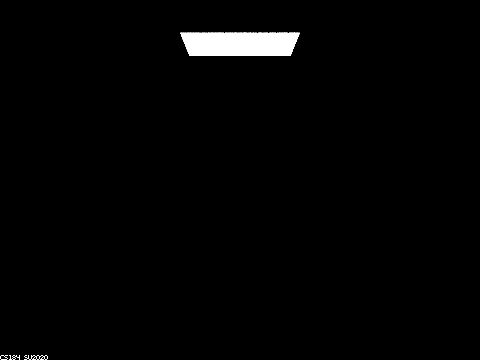
|
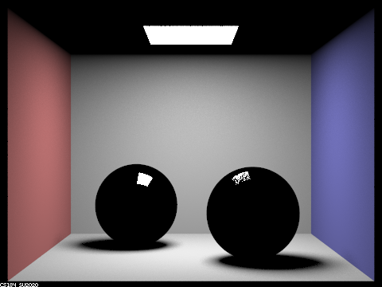
|
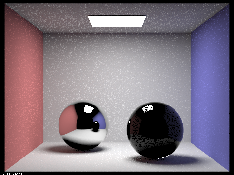
|

|
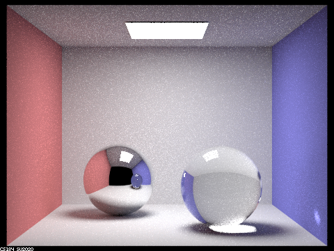
|
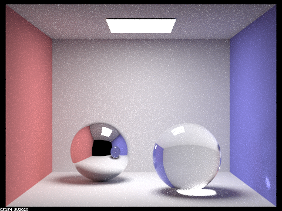
|
|
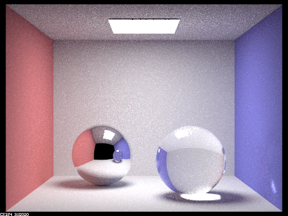
|
Point out the new multibounce effects that appear in each image.
Max_depth = 0, There is no lights in the room except for the light source.
Max_depth = 1, The walls, the floors, and some parts of spheres are lit up.
Max_depth = 2, The ceilings, and the reflections of the further spheres are now shown, tho the ceilings, and closer shpere in the sphere are still black.
Max_depth = 3, the ceilings inside the reflection is shown, the closer sphere is now lit up.
Max_depth = 4, the closer sphere in the reflection is now shown, and the bottom of the closer sphere is now correctly showing the reflection due to the highlight on the floor.
Max_depth = 5 and 100, there is no obvious differences compared to max_depth = 4.Explain how these bounce numbers relate to the particular effects that appear. Make sure to include all screenshots.
Max_depth = 0, There is no bounces so the rays coming form the light source will not be reflected or refracted. Therefore there is no ambient lights except for the light source, everything else is black.
Max_depth = 1, only one bounce is allowed. The "first point of contact", the walls , the floors, and small piece of area on the spheres are lit up. However, the ceilings and the rest of the spheres are still black because the light will need to bounce at least twice to reach these areas.
Max_depth = 2, The lights are now able to reach the ceilings are two bounces, (light source -> floors/walls -> back to the ceilings/further sphere). Besides, we can now observe the red and blue walls on one of the spheres, same reasons as the ceilings. However, the other sphere is still black because it's closer to us. The closer it is, the less reflection we get.
Max_depth = 3, The lights are now able to reach the other sphere(light source -> floor/walls -> ceilings -> the closer sphere) and the ceiling inside the reflection of further sphere is lit up as well. However, the closer sphere's bottom is black because the highlight on the floor due to the glass materials, can not bounce back to the sphere.
Max_depth = 4, For the further sphere, the reflection of the closer sphere can be seen. The reflection of the closer sphere can be now reflected on the further sphere (max_depth = 3 + 1 = 4). The bottom of the closer sphere is now lit up because the high light on the floor bounces back.
Max_depth = 5 and 100, there is no obvious differences compared to max_depth = 4. It's sufficient to approximate the real-life situation with max_depth = 5 or above. Max_depth = 100 does not make more difference because most of them will not be calculated due to rassian roulette.Part 4. Depth of Field
For these subparts, we recommend using a microfacet BSDF scene to show off the cool out of focus effects you can get with depth of field!In a few sentences, explain the differences between a pinhole camera model and a thin-lens camera model.
A pinhole camera model assumes that light travels through a tiny hole and produces an inverted image on the opposite side of the hole. It's aperture of 0 and infinite depth of field, so anything is in focus and will be projected to the opposite side. It does not take into account the effects of lenses or optical aberrations.
Thin-lens camera model uses a thin len to describe how light passes through the lens and is focused onto the image sensor. With the lens model, objects are in focus only if they're within a plane that is at from the len. Otherwise the image will be blurred if lights go beyond the depth of field. When the thin-lens radius is extremly small, it can be approximated to a pinhole camera model because all lights will go through the center of the lens.
Show a "focus stack" where you focus at 4 visibly different depths through a scene. Make sure to include all screenshots.
radius = 0.23
|
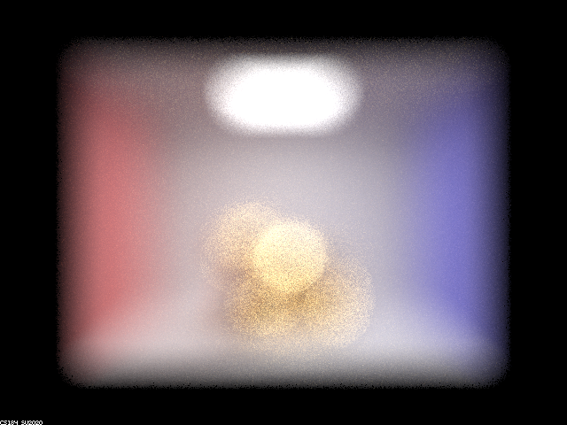
|
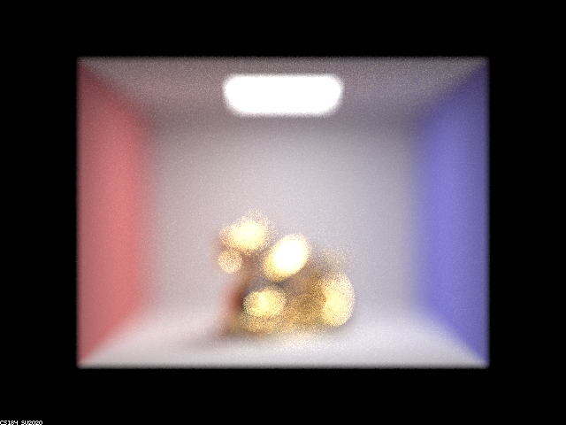
|
|
|
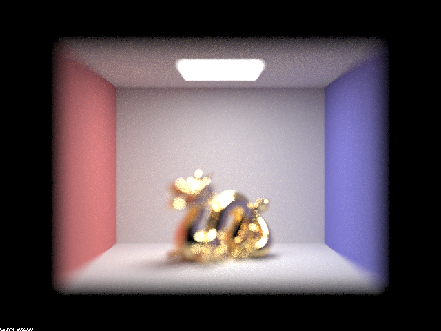
|
Show a sequence of 4 pictures with visibly different aperture sizes, all focused at the same point in a scene. Make sure to include all screenshots.
f = 4.5
|
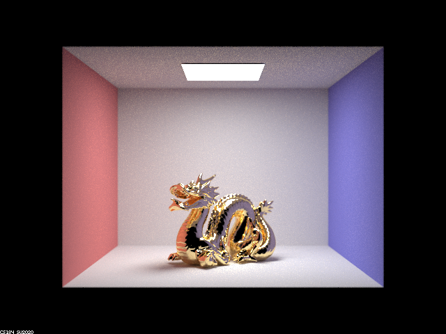
|
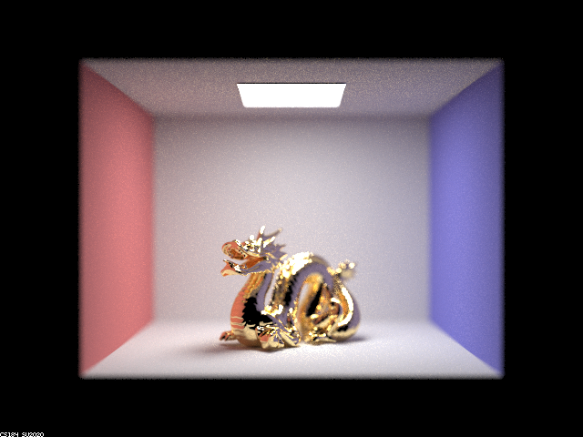
|
|
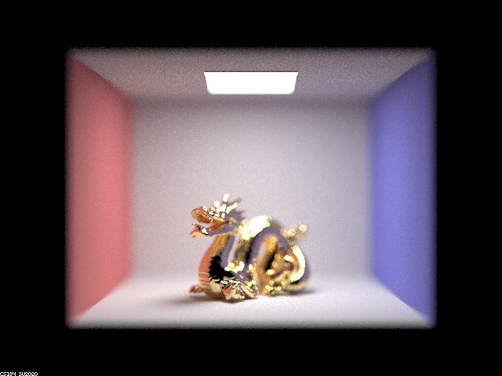
|
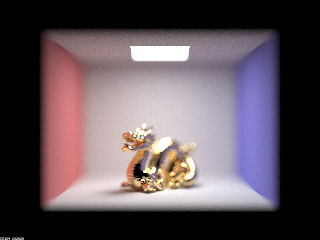
|